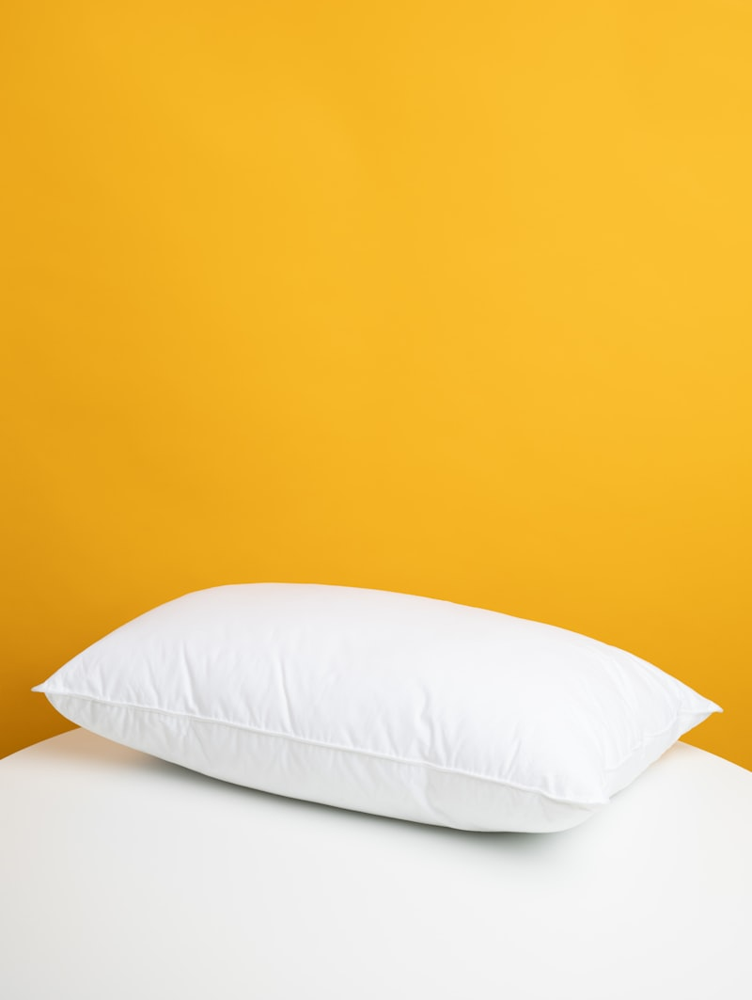
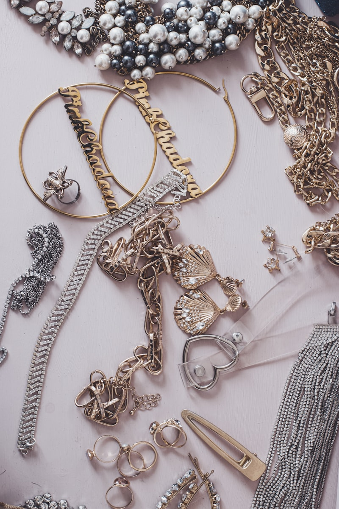
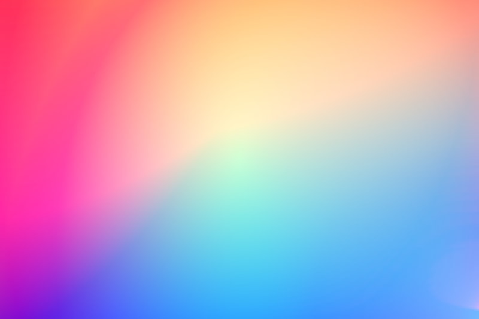
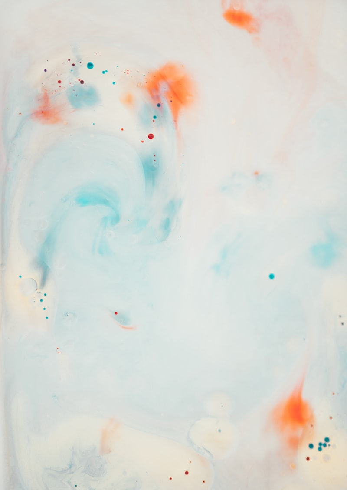

Super 150s Wool
Biella, Italy
Loro Piana Royal Flannel
Medium weight 280g wool. Breathable, natural drape, ideal for all-season bespoke suits and trousers.
Weave: Twill
Recommended Suiting

100% Cashmere
Ulaanbaatar
Imperial Mongolian Cashmere
Ultra-warm 420g cashmere textile designed for bespoke trench coats, winter waistcoats, and blazers.
Weave: Plain
Luxury Overcoats

100% Mulberry Silk
Lyon, France
Duchess Silk Satin
High lustre 190g silk satin used for bridal gowns, tuxedos lapels, and interior jacket linings.
Weave: Satin
Evening & Tuxedo

Giza 45 Cotton
Alexandria, Egypt
Thomas Mason Poplin
Extra-long staple 140/2 ply cotton for crisp, breathable bespoke dress shirts and formal cuffs.
Weave: Poplin
Bespoke Shirts

Harris Tweed
Hebrides, Scotland
Scottish Donegal Tweed
Handwoven 380g virgin wool with characteristic flecks of color. Outstanding durability and classic aesthetic.
Weave: Herringbone
Country Jackets

Cotton Velvet
Florence, Italy
Florentine Royal Velvet
Deep pile 320g cotton velvet for smoking jackets, dinner coats, and evening slippers.
Weave: Velvet Pile
Smoking Jackets